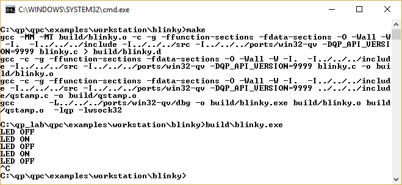
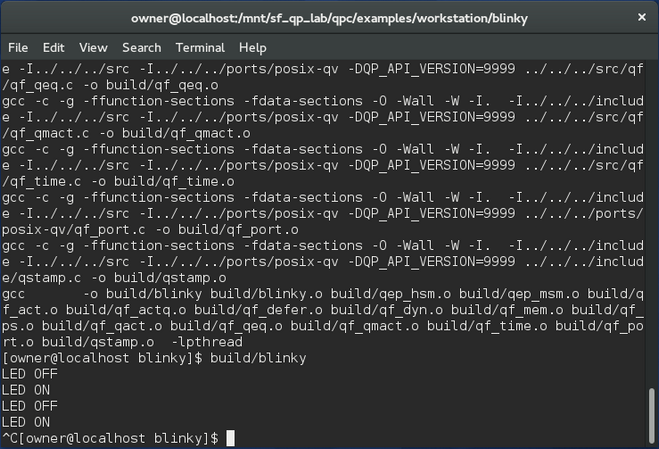
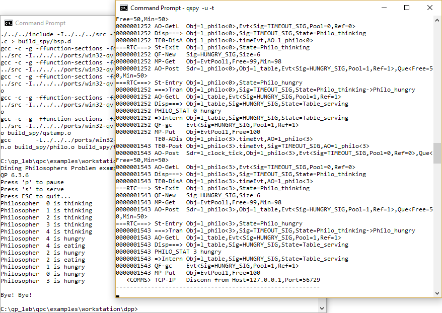
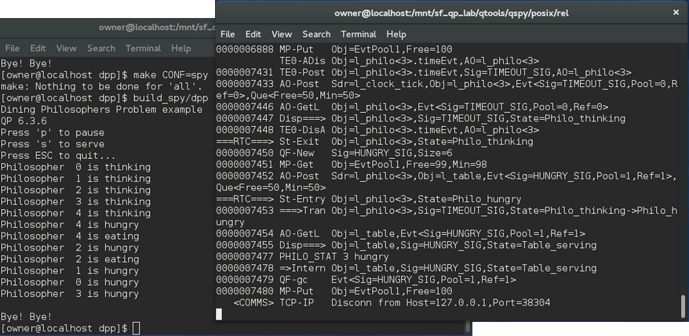

QP/C++
7.2.1
Real-Time Embedded Framework
The examples in the qpcpp/examples/workstation directory are designed for workstations (running Windows, Linux, or MacOS). Currently, the following examples are provided:
All examples in the qpcpp/examples/workstation directory work both on Windows as well as on POSIX (Linux, MacOS). On each of these operating systems you use the same cross-platform Makefile co-located with each example. The provided cross-platform Makefiles assume the GNU GCC toolchain. The Makefile discovers the host operating system and chooses the appropriate QP port version:


Each of the examples can be linked to either the single-threaded QP/C++ ports (Win32-QV (Windows with QV) or POSIX-QV) or multi-threaded ports (Win32 API (Windows) or POSIX). The choice is made in the Makefiles, by editing the line, which defines the QP_PORT_DIR symbol. For instance, the following lines select the Win32-QV (Windows with QV) port and leave the Win32 API (Windows) port commented-out:
To reverse the selection, you need to move the comment # character.
The Makefiles for the examples generally support the following three build configurations.
This is the default build configuration, with full debugging information and minimal optimization. To build this configuration, type:
To clean this build, type
The object files and the executable is located in the build sub-directory.
This configuration is built with no debugging information and high optimization. Single-stepping and debugging might be difficult due to the lack of debugging information and optimized code. To build this configuration, type:
To clean this build, type
The object files and the executable is located in the build_rel directory.
This configuration is built with the QP's Q-SPY trace functionality. The QP/Spy output is performed by a TCP/IP socket and requires launching the QSPY host application with the -t option. To build this configuration, type:
To clean this build, type
The object files and the executable are located in the build_spy sub-directory.
-t command-line option before running the example. This is so that the example code can output the QS software tracing to the TCP/IP socket of QSPY.

